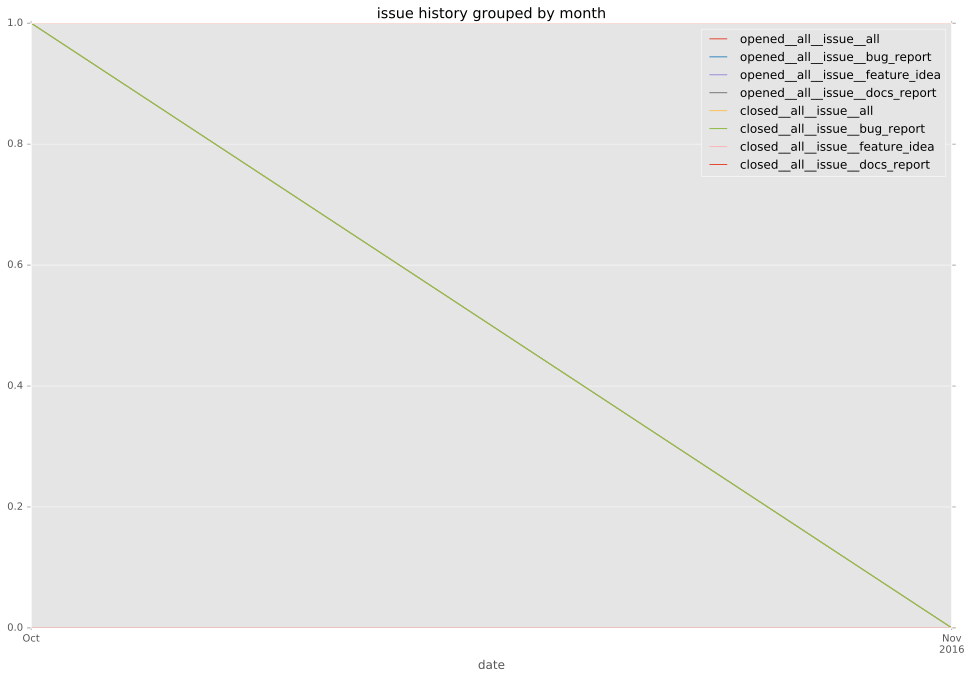

total issue counts
bugfix pull request: 3
issue: 1
pullrequest: 4
docs pull request: 1
bug report: 1
issue history

days open by issue type
all
count: 7
std: 9.55435577555
min: 0
max: 22
median: 0.0
mean: 7.42857142857
pullrequest
count: 0
std: nan
min: nan
max: nan
median: nan
mean: nan
docs pull request
count: 2
std: 0.0
min: 0
max: 0
median: 0.0
mean: 0.0
bugfix pull request
count: 5
std: 9.91463564636
min: 0
max: 22
median: 15.0
mean: 10.4
issue
count: 0
std: nan
min: nan
max: nan
median: nan
mean: nan
bug report
count: 0
std: nan
min: nan
max: nan
median: nan
mean: nan
closures grouped by total days open